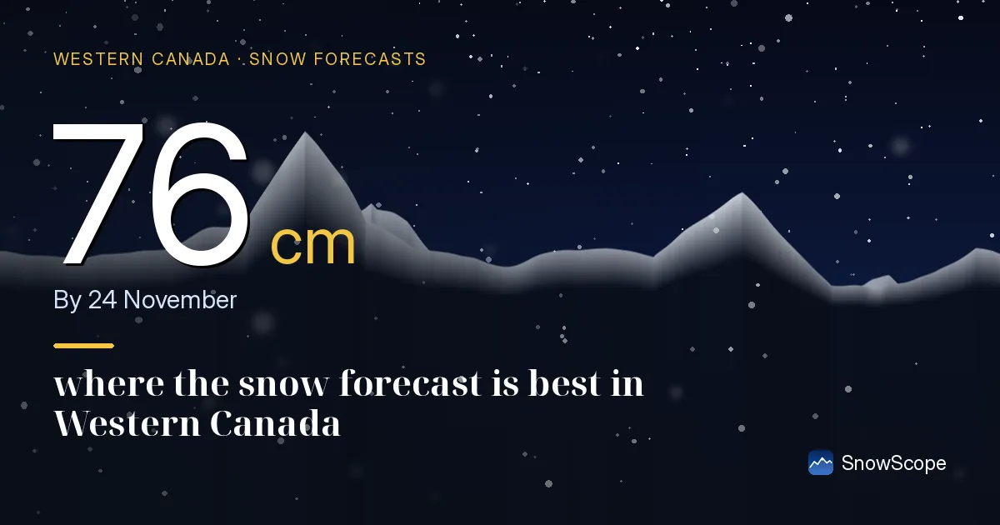
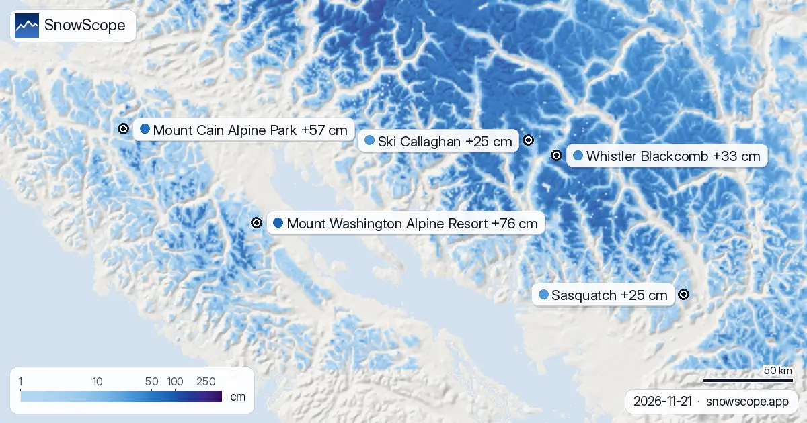

76 cm by 24 November: where the snow forecast is best in Western Canada
Mount Washington Alpine Resort will receive around 76 cm of new snow by 24 November—most of it arriving on the final day. The question for skiers is not whether snow is coming, but where it will fall thickest and at which height it will stick.
See the live snow forecast for Mount Washington Alpine Resort in the SnowScope appSnow depth, powder alerts and the 3D map, free.
Who gets the most snow
Mount Washington Alpine Resort leads Western Canada's forecast with 76 cm in the next three days. Mount Cain Alpine Park follows with 57 cm, and Whistler Blackcomb with 33 cm. Lower resorts fare worse: Sasquatch and Ski Callaghan each expect around 25 cm.
The difference comes down to elevation. Higher ground catches more snow, and the forecast's biggest totals cluster where the mountains rise above 1,500 m. If you can reach the top chairs, you will find the deepest cover.
| Resort | Snow depth | New snow, 72 h | Coming, next days | Top |
|---|---|---|---|---|
| Mount Washington Alpine Resort | 95 cm | 1 cm | 76 cm | 1,569 m |
| Mount Cain Alpine Park | 93 cm | 0 cm | 57 cm | 1,616 m |
| Whistler Blackcomb | 150 cm | 0 cm | 33 cm | 2,259 m |
| Sasquatch | 13 cm | 0 cm | 25 cm | 1,316 m |
| Ski Callaghan | 15 cm | 0 cm | 25 cm | 998 m |

When the snow arrives
The timing is uneven across the forecast period. Saturday 21 November brings almost nothing. Sunday and Monday stay light—1 to 7 cm daily. The main event is Tuesday 24 November, when Mount Washington Alpine Resort alone receives 66 cm.
This concentration matters. A single heavy day means the snow will be fresh and deep on Tuesday morning, but also means your window to ski it clean is narrow. By Wednesday, sun and traffic will begin to change it.
Height decides the snow line
At Mount Washington Alpine Resort, the base sits at 1,081 m; the top reaches 1,569 m. Currently the base has no snow on the ground. The midpoint at 1,325 m holds 3 cm today and will gain 63 cm in the next week. The summit will add 63 cm as well.
By contrast, at Mount Cain Alpine Park the base at 1,190 m shows only 4 cm today and will gain just 7 cm over the forecast period. The mid-slope at 1,403 m has 21 cm already and will gain 7 cm. The top at 1,616 m holds 66 cm and will stay there—little new accumulation expected.
This tells you to target the upper half of Mount Washington Alpine Resort and to stay high at Mount Cain. Whistler Blackcomb, with its 2,259 m summit, will have the most reliable dry snow: its peak will collect 15 cm new snow on deep existing cover.
Rain and snow transitions
In the lower valleys around Courtenay, the snow line sits at 640 m today. This means rain falls below, snow above. As the front moves through, freezing levels will shift.
On 23 November, Mount Washington Alpine Resort's freezing level stays between 740 m and 910 m—well below the base at 1,081 m. Snow is certain. At Mount Cain Alpine Park, the freezing level climbs to 810 m to 990 m, still below the base at 1,190 m, so snow should fall across the ski area. At Whistler Blackcomb on the same day, the freezing level reaches 750 m to 1,260 m: the lower mountain will see wet snow or rain; the mid and upper slopes will stay dry and cold.
How this winter compares so far
Mount Washington Alpine Resort normally has 43 cm at 1,325 m by 21 November. Today it has only 6 cm—about one-seventh of average. This is a thin start. In past winters, only one in ten had snow deeper than 97 cm by this date; Mount Washington is nowhere near that.
Mount Cain Alpine Park tells a sharper story. At 1,403 m it should have 55 cm by now; it has 33 cm. That is weaker than 37 of the past 46 winters. The forecast top-up of 7 cm will help but not close the gap. Sasquatch is in real deficit: it has 2 cm at mid-height where it should have 68 cm—deeper than only one past winter out of 46.
The forecast snow will ease the shortage, especially at Mount Washington Alpine Resort. After 24 November, the region should hold near-normal cover overall.
What to do before you go
Forecasts three days out shift often. The day totals are less stable than the timing, so check the map again on 23 November before you book your trip. Wet snow can appear even if the freezing level stays below the base, so monitor the forecast to the morning of your visit.
If you drive to Mount Washington Alpine Resort or Mount Cain Alpine Park, expect the lower roads to be wet or slushy on 24 November while the upper slopes stay snow-covered. Fresh snow on wet ground will make the base muddy; bring chains.
Tips for skiers
- Head for the upper slopes of Mount Washington Alpine Resort or Whistler Blackcomb on 24 November: 66 cm and 27 cm respectively will fall at the summit, more than lower down.
- If the freezing level climbs above 1,000 m on 24 November, ski the highest chairs to stay in cold, dry snow.
- Tuesday 24 November morning is prime time: the snow will be fresh and untracked. By afternoon, sun exposure will begin to soften the surface on south-facing slopes.
- Before you venture off-piste or into the backcountry, read the official avalanche bulletin: fresh snow on existing cover raises the risk.
- Enable snow alerts in the SnowScope app for Mount Washington Alpine Resort so you know the moment snow begins on 24 November.
About these numbers
Resort snow depths are the deepest snow on the resort's upper slopes on the date shown; they are estimates for an area, not a measurement at one point. Forecasts can change. Always read the official avalanche bulletin before going off-piste.
Official avalanche bulletins: Avalanche Canada
Cite this report
For research, teaching or the press: the numbers and charts are free to reuse under CC BY 4.0 with this citation.
SnowScope (2026), 76 cm by 24 November: where the snow forecast is best in Western Canada, https://snowscope.app/blog/en/2026/11/western-canada-mount-washington-alpine-resort-snow-forecast-21-november-2026.html, accessed 2026-11-21
SnowScope (Atlas Labs). (2026, November 21). 76 cm by 24 November: where the snow forecast is best in Western Canada. SnowScope snow reports. https://snowscope.app/blog/en/2026/11/western-canada-mount-washington-alpine-resort-snow-forecast-21-november-2026.html
BibTeX
@misc{snowscope2026westerncanadamountwashin,
author = {{SnowScope (Atlas Labs)}},
title = {76 cm by 24 November: where the snow forecast is best in Western Canada},
year = {2026},
month = nov,
howpublished = {\url{https://snowscope.app/blog/en/2026/11/western-canada-mount-washington-alpine-resort-snow-forecast-21-november-2026.html}},
note = {Published 2026-11-22 10:03 UTC; accessed 2026-11-21}
}· CC BY 4.0 · Methods, data and tools →
Mount Washington Alpine Resort: snow and temperature by height, this winter vs last (tools) →
Follow Mount Washington Alpine Resort
Free: a message when fresh snow is coming, and the forecast every morning.
More snow reports

Whistler Blackcomb saw 76 cm of new snow in the last 72 hours, with Mount Cain Alpine Park also receiving 64 cm, as of November 16, 2026.

Western Canada forecast: 90 cm new snow at Mount Washington in the next two weeks, with 70 cm expected in late November and early December.

Whistler Blackcomb has the most snow in Western Canada this weekend with 136 cm on upper slopes. Early-season cover is thin at mid-elevations across the region, measured 2026-11-19.